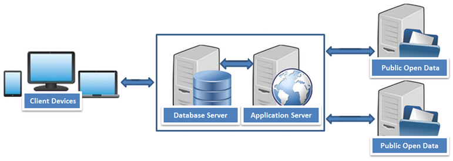

ONE APP
to rule them all!
Open Data
iborn.net
Информатијада 2014
What is open data?
- Open data is created and shared mainly by the public institutions
- Health, education, finance, economics, cadaster
- Open data is data that can be freely used, reused and redistributed by anyone - subject only, at most, to the requirement to attribute and share alike
- Data is one of the most valuable assets for the companies
- Business processes that can benefit from open data?
How to use open data
- Why SOA is the right architecture?
- Open data APIs
- Data integrity, accuracy, meaning, value...
- Building your own API
- Proxy?
System architecture
Examples
Goals
- Easy to implement in existing systems
- Easy to configure and maintain
- Performance is important
- Access, process and use the public open data in real scenarios
- The use of open data should save resources, improve data quality and create new business perspectives